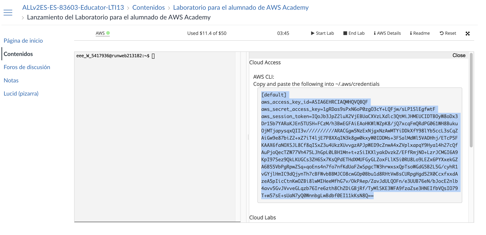

Reto práctico 1: Active Directory en AWS (TechCorp)¶
- Modalidad: Individual o en parejas (según criterio del profesor).
- Duración estimada: 1,5–2 horas (Fase 0 + Fase 1 + Fase 2).
- Puntuación: 30 puntos.
- Criterios evaluados: CE3d (despliegues repetibles), CE3e (automatización), CE3h (documentación).
- Entorno: Cuenta AWS (educativa o con créditos), Terraform instalado, AWS CLI configurado, cliente RDP.
El reto toma como punto de partida un repositorio de referencia con el proyecto resuelto (Terraform + scripts PowerShell). Tu tarea es clonarlo, configurarlo, ejecutarlo y corregir los errores que aparezcan al probarlo (región, AMI, variables, user_data, scripts, permisos, etc.). Al final debes tener un despliegue funcional y documentar qué fallos encontraste y cómo los resolviste.
Objetivos¶
Al finalizar el reto serás capaz de:
- Usar un repositorio de IaC como punto de partida: clonar, revisar la estructura y configurar las variables necesarias.
- Ejecutar
terraform applysobre el proyecto y detectar y corregir errores que surjan durante el despliegue o la ejecución de los scripts (en Terraform, en el user_data o en los scripts PowerShell). - Verificar que el entorno queda operativo (DC01 como DC, OUs, usuarios, Cliente unido al dominio) y documentar las correcciones realizadas.
Requisitos previos¶
- Cuenta AWS Academy: utilizarás tu cuenta de AWS Academy (laboratorio del módulo). Será necesario configurar las credenciales en tu equipo con
aws configureusando las credenciales de acceso (Access Key ID y Secret Access Key) que te proporciona el laboratorio. Para saber cómo obtenerlas y configurarlas, consulta los vídeos de la teoría de la unidad (Automatización y monitorización) y la documentación del laboratorio. - Terraform ≥ 1.0 (
terraform version) instalado en tu máquina. - Par de claves en EC2: crea un par de claves en la consola de EC2 (dentro de tu laboratorio AWS Academy) para poder obtener la contraseña de RDP de las instancias Windows.
- Conocimiento básico de Active Directory y de Windows Server (RDP). Conocimiento básico de Terraform y PowerShell ayuda a localizar y corregir errores.
- Par de claves en EC2 para poder obtener la contraseña de RDP de las instancias Windows.
¿Cómo instalar AWS CLI en Visual Studio Code o Cursor?
- Instalación de AWS CLI en Visual Studio Code o Cursor:
Tanto Visual Studio Code como Cursor son editores que permiten utilizar un terminal integrado, desde el cual puedes instalar AWS CLI fácilmente.
1. Abre una terminal integrada desde VS Code o Cursor (Ctrl + ñen Windows o `Ctrl + Shift + `` en Mac/ Linux). 2. Ejecuta el comando de instalación según tu sistema operativo, por ejemplo en Windows:o en Mac/Linux:msiexec.exe /i https://awscli.amazonaws.com/AWSCLIV2.msio siguiendo la guía oficial de instalación. 3. Verifica la instalación con:curl "https://awscli.amazonaws.com/AWSCLIV2.pkg" -o "AWSCLIV2.pkg" sudo installer -pkg AWSCLIV2.pkg -target /Ambos editores (VS Code y Cursor) soportan la operación de AWS CLI desde su terminal integrada, facilitando la gestión de recursos en AWS desde el entorno de desarrollo.aws --version
Configurar AWS CLI con credenciales de AWS Academy
Para usar el código del reto con tu laboratorio de AWS Academy:
1. En el portal de AWS Academy, inicia tu laboratorio y accede a Credenciales de AWS (o AWS Details / Show para ver la Access Key y la Secret Key).
2. En tu equipo, abre una terminal (por ejemplo en VS Code o Cursor con Ctrl + ñ o Ctrl + \``) y ejecuta:
us-east-1` o la que indique el laboratorio) y opcionalmente el formato de salida (puedes dejar por defecto).
4. Comprueba que la configuración es correcta con:
aws configure
aws sts get-caller-identity
Enfoque: infraestructura como código + configuración con scripts¶
La infraestructura se define en Terraform (carpeta terraform/) y la configuración interna (AD, OUs, usuarios, unión al dominio, recursos compartidos, GPO) se ejecuta mediante scripts PowerShell (carpeta scripts/) orquestados por Terraform. Necesitas ambas carpetas según la estructura indicada.
| Capa | Herramienta | Qué automatiza |
|---|---|---|
| Infraestructura | Terraform | VPC, subred, Security Group, opciones de DHCP (dominio + DNS), instancias EC2 (DC01 y Cliente). Todo lo que es "recursos en AWS". |
| Configuración interna | Scripts PowerShell | Nombre del equipo, instalación del rol AD DS, promoción a controlador de dominio, usuario admin del dominio, OUs y usuarios desde CSV (20 usuarios TechCorp), grupos por departamento, unión del cliente al dominio, habilitar RDP para Domain Users, recursos compartidos y carpetas personales, GPO (contraseñas y bloqueo). Todo lo que ocurre dentro del sistema operativo. |
Con este reparto, un único flujo (por ejemplo terraform apply + ejecución de scripts en orden o vía user_data) puede dejar el entorno completo listo sin pasos manuales en consola.
Estructura general del proyecto¶
El repositorio de referencia sigue esta estructura. En la raíz del repo aparece la carpeta techcorp-ad-iac/; dentro tienes terraform/ y scripts/. En terraform/ encontrarás además las plantillas userdata_dc01.ps1.tpl y userdata_cliente.ps1.tpl que inyectan los scripts en el user_data de cada instancia.
techcorp-ad-iac/
├── terraform/ # Infraestructura como código
│ ├── provider.tf
│ ├── main.tf # VPC, subnet, SG, dhcp options, EC2
│ ├── variables.tf
│ ├── outputs.tf
│ ├── terraform.tfvars.example
│ ├── userdata_dc01.ps1.tpl # User data DC01 (01 + programación 02-05)
│ └── userdata_cliente.ps1.tpl
├── scripts/ # Configuración interna (PowerShell)
│ ├── dc01/ # Scripts que se ejecutan en el DC01 (orden 01 → 05)
│ │ ├── 01-rename-and-ad.ps1 # Nombre del equipo, AD DS, promover a DC
│ │ ├── 02-admin-user.ps1 # Usuario administrador del dominio (admin.dominio)
│ │ ├── 03-CrearEstructuraAD.ps1 # OUs TechCorp, 20 usuarios desde CSV, grupos por depto
│ │ ├── 04-RecursosCompartidos.ps1 # Carpetas compartidas, carpetas personales (X:)
│ │ ├── 05-GPO.ps1 # GPO: contraseñas (vigencia, historial, longitud) y bloqueo
│ │ └── techcorp_usuarios.csv # Datos de los 20 usuarios (alineado al reto grupal)
│ └── cliente/ # Scripts que se ejecutan en el Cliente
│ └── 01-join-domain.ps1 # Unir al dominio; en DC01: habilitar RDP para Domain Users
└── README.md # Orden de ejecución y requisitos
Carpeta terraform/:¶
Contenidos principales definidos en modo lista:
- VPC (Virtual Private Cloud)
- Subred pública
- Security Group con reglas para:
- RDP (puerto 3389)
- Puertos de Active Directory:
53,88,135,389,445,636,3268,3269,49152-65535
- Opciones de DHCP:
- Nombre de dominio (ejemplo:
techcorp.local) - Servidor DNS: IP privada del DC01
- Nombre de dominio (ejemplo:
- Instancias EC2:
- DC01
- Cliente
- Outputs típicos:
- IP pública y privada del DC01
- IP del Cliente
- ID de la VPC
Carpeta scripts/:¶
Scripts PowerShell para la configuración del entorno Windows, organizados así:
- En DC01 (orden de ejecución 01 → 05):
- Nombre del equipo, instalación del rol AD DS y promoción a controlador de dominio (DC)
- Creación del usuario administrador del dominio
- Creación de OUs por departamento (Gerencia, IT, Administración, Comercial, RRHH), 20 usuarios desde CSV y grupos
- Configuración de recursos compartidos (TechCorp_Users, TechCorp_Datos) y carpetas personales
- Configuración de GPO de contraseñas y bloqueo (pueden usar el módulo GroupPolicy de PowerShell:
New-GPO, enlaces, etc.) - (Opcional) Automatización para habilitar RDP a Domain Users en DC01
- En el Cliente:
- Script para unir el equipo al dominio
Ejecución de los scripts desde Terraform¶
Se puede integrar en Terraform que los scripts se ejecuten en el servidor (DC01) o en el cliente cuando se lanza terraform apply, de modo que un único flujo cree la infraestructura y aplique la configuración en cada host.
| Enfoque | Cómo funciona | Dónde se ejecutan los scripts |
|---|---|---|
| User data | Cada instancia EC2 recibe en user_data un bloque PowerShell (o la ruta a un script en S3). Se ejecuta al primer arranque. En DC01 puede incluir el 01 (nombre + AD + reinicio) y un "launcher" que, tras el reinicio, ejecute 02 → 05 (p. ej. tarea programada al inicio). En el Cliente, user_data con el script de unión al dominio. |
En la propia instancia (DC01 o Cliente) al arrancar. |
| SSM Run Command | Las instancias llevan un rol IAM que permite Systems Manager. Tras crearlas, Terraform usa un null_resource + local-exec (o un recurso que invoque aws ssm send-command) para enviar la ejecución de los scripts a cada instancia en el orden correcto: primero 02 → 05 en DC01 (cuando el DC esté listo), luego el script de unión en el Cliente. Los scripts pueden estar en S3 o copiarse antes. |
En DC01 y en el Cliente, orquestado por Terraform tras el apply. |
Provisioner remote-exec (WinRM) |
Terraform se conecta por WinRM a las instancias Windows y ejecuta comandos (p. ej. descargar y ejecutar los scripts). Requiere WinRM configurado (puerto 5986 HTTPS), por ejemplo mediante un user_data mínimo en el primer arranque. Con depends_on y varios null_resource se puede ordenar: primero scripts en DC01, luego en el Cliente. |
En la instancia a la que se conecta cada provisioner (DC01 o Cliente). |
Note
De forma general, a cada aws_instance se le asigna el mecanismo elegido (user_data, SSM o remote-exec). Al ejecutar terraform apply, la infraestructura se crea y los scripts se lanzan en cada máquina sin pasos manuales.
Flujo típico:
- Terraform crea:
- Red (VPC)
- Opciones de DHCP
- Security Groups
- Instancias EC2
-
(Si usas
user_data, cada máquina ejecuta su script al arrancar automáticamente) 2. En DC01: -
Se ejecutan los scripts en el siguiente orden: 01 → 05
-
(Si aplica, reinicio tras el script 01: nombre y promoción a AD) 3. En el Cliente:
-
Se ejecuta el script para unir el equipo al dominio
- (Este paso debe realizarse después de que DC01 esté completamente listo, especialmente si usas SSM o remote-exec)
Notas adicionales
La implementación concreta (qué recurso Terraform y qué mecanismo exacto se utiliza —p. ej. aws_vpc_dhcp_options, user_data, null_resource con SSM— y el contenido de los scripts PowerShell) se adapta según las necesidades del reto. Con ello, terraform apply realiza toda la configuración en el orden adecuado, en servidor y cliente, sin intervención manual.
Fases del reto:
- Fase 0: Obtener el código de partida desde el repositorio de referencia (clone o descarga), revisar la estructura y configurar las variables.
- Fase 1: Ejecutar el despliegue (
terraform init,plan,apply), identificar errores que surjan al probar y corregirlos (Terraform, user_data, scripts, región, AMI, etc.). - Fase 2: Verificar el resultado una vez corregidos los errores (DC01 como DC, OUs, usuarios, Cliente unido al dominio).
Fase 0 — Repositorio de partida (15–20 min)¶
Objetivo¶
Tener instalados y configurados AWS CLI y Terraform en tu equipo, obtener el proyecto de referencia como punto de partida, revisar su estructura (terraform/ + scripts/) y configurar las variables necesarias para tu cuenta AWS Academy y tu región.
Pasos¶
1. Instalar AWS CLI¶
Instala la AWS CLI en tu sistema según tu sistema operativo. Consulta los vídeos de la teoría de la unidad y la guía oficial de instalación. Ejemplos rápidos:
- Windows: descarga el instalador MSI desde la documentación de AWS o ejecuta (PowerShell como administrador):
msiexec.exe /i https://awscli.amazonaws.com/AWSCLIV2.msi - macOS:
curl "https://awscli.amazonaws.com/AWSCLIV2.pkg" -o "AWSCLIV2.pkg"y luegosudo installer -pkg AWSCLIV2.pkg -target / - Linux (Debian/Ubuntu):
sudo apt install awsclio sigue la guía oficial.
Comprueba con: aws --version.
2. Configurar AWS CLI con credenciales de AWS Academy¶
Las credenciales del laboratorio son temporales e incluyen un session token. El comando aws configure no pide el session token, por lo que hay que escribir las credenciales en el archivo ~/.aws/credentials (o copiar el bloque que da el laboratorio). Sigue estos subpasos:
2.1 — Obtener las credenciales en AWS Academy
- En el portal de AWS Academy, inicia tu laboratorio (Start Lab).
- Pulsa AWS Details (o Cloud Access) en el panel del laboratorio.
- Se abrirá una ventana con el título AWS CLI y la instrucción de copiar el contenido en
~/.aws/credentials. Verás un bloque con: [default]aws_access_key_id=...aws_secret_access_key=...aws_session_token=...(cadena larga)- Copia todo ese bloque (las cuatro líneas).

Ejemplo de cómo copiar el bloque de credenciales desde el laboratorio de AWS Academy para pegar en ~/.aws/credentials.
2.2 — Escribir las credenciales en tu equipo
- En tu máquina (macOS, Linux o Git Bash/WSL en Windows), abre el archivo de credenciales:
(Si no existe la carpeta
nano ~/.aws/credentials~/.aws, créala antes:mkdir -p ~/.aws.) - Pega el bloque que copiaste del laboratorio, de modo que quede algo así:
[default] aws_access_key_id=ASIA... aws_secret_access_key=... aws_session_token=IQoJb3JpZ2lu... - Guarda y cierra (en nano:
Ctrl+O, Enter,Ctrl+X).
2.3 — Configurar región y formato de salida
- Crea o edita el archivo de configuración:
nano ~/.aws/config - Asegúrate de que tenga una sección
[default]con la región correcta de tu laboratorio. Por ejemplo (la región debe ser una válida de AWS, comous-east-1,us-west-2oeu-west-1; no useseu-east-1, que no existe):[default] region = us-east-1 output = json - Guarda y cierra.
2.4 — Comprobar que la configuración funciona
- En la terminal ejecuta:
aws sts get-caller-identity - Si la configuración es correcta, verás un JSON con
UserId,AccountyArn. Si aparece un error de conexión al endpoint, revisa que la región en~/.aws/configsea la que indica tu laboratorio (p. ej.us-east-1).
3. Instalar Terraform¶
Instala Terraform en tu equipo según tu sistema operativo. Consulta los vídeos de la teoría de la unidad. Algunas opciones:
- Windows: descarga el binario desde terraform.io o con Chocolatey:
choco install terraform. - macOS: con Homebrew:
brew install terraform. - Linux: descarga el binario o usa el repositorio de HashiCorp (ver documentación oficial). En Amazon Linux 2023 puedes usar:
sudo yum install -y yum-utils && sudo yum-config-manager --add-repo https://rpm.releases.hashicorp.com/AmazonLinux/hashicorp.repo && sudo yum -y install terraform
Comprueba con: terraform version.
4. Clonar o descargar el repositorio¶
Repositorio de partida: https://github.com/fjavier-hernandez/techcorp-ad-iac (Terraform + scripts PowerShell, user_data para DC01 y Cliente). Para una guía detallada de todos los archivos del repositorio, con explicación de sus comandos y por qué se utilizan, consulta Contenido del repositorio TechCorp AD IaC.
git clone https://github.com/fjavier-hernandez/techcorp-ad-iac.git
cd techcorp-ad-iac
Si no usas Git, descarga el ZIP desde GitHub y descomprímelo.
5. Revisar la estructura del repositorio¶
Asegúrate de que el repositorio descargado tiene la siguiente estructura:
techcorp-ad-iac/
├── terraform/
│ ├── provider.tf
│ ├── main.tf
│ ├── variables.tf
│ ├── outputs.tf
│ ├── terraform.tfvars.example
│ ├── userdata_dc01.ps1.tpl
│ └── userdata_cliente.ps1.tpl
└── scripts/
├── dc01/
│ ├── 01-xxxx.ps1
│ ├── 02-xxxx.ps1
│ ├── 03-xxxx.ps1
│ ├── 04-xxxx.ps1
│ ├── 05-xxxx.ps1
│ └── techcorp_usuarios.csv
└── cliente/
└── 01-join-domain.ps1
Nota
- Los nombres de scripts pueden variar ligeramente, pero deberían existir los archivos principales y plantillas indicadas arriba.
- Lee el README del repositorio para comprender el uso de variables, los pasos de despliegue y el funcionamiento de los scripts.
6. Key Pair en AWS Academy para Terraform¶
Para que Terraform pueda lanzar las instancias EC2 necesitas un par de claves registrado en EC2. En AWS Academy el PEM que descargas desde AWS Details no está registrado como key pair en EC2, por lo que hay que importarlo. Sigue estos subpasos:
Cada vez que abras un laboratorio
Hay que repetir este paso cada vez que inicies un nuevo laboratorio (o que el entorno se reinicie). Cada sesión de lab tiene su propio PEM y su propia cuenta; los key pairs que importes no se conservan entre sesiones. Tras Start Lab, descarga de nuevo el PEM, extrae la clave pública, importa el key pair en EC2 y actualiza key_name en terraform.tfvars si cambiaste el nombre.
6.1 — Abrir AWS Academy y acceder al laboratorio
- Accede a tu laboratorio de AWS Academy.
- Pulsa Start Lab.
- En la consola del laboratorio, asegúrate de estar en la región correcta (por ejemplo,
us-east-1).
6.2 — Obtener el PEM desde AWS Details
- Pulsa AWS Details en el panel derecho.
- Busca la sección SSH Key.
- Haz clic en Download PEM.
- Guarda el archivo
.pemen tu máquina (por ejemploacademy-temp.pem).
PEM de AWS Academy
Este PEM no está registrado como key pair en EC2, por eso Terraform no lo reconoce directamente. Hay que importar la clave pública en EC2 (pasos siguientes).
6.3 — Extraer la clave pública desde el PEM
En tu máquina local (Linux/macOS) abre una terminal y ejecuta:
ssh-keygen -y -f academy-temp.pem > academy-temp.pub
(En Windows puedes usar Git Bash o WSL.) Esto genera un archivo .pub con la clave pública que EC2 puede usar.
6.4 — Crear un key pair en EC2 usando la clave pública
- Ve a EC2 → Key Pairs en la consola de AWS Academy.
- Pulsa Import Key Pair.
- Pon un nombre para el key pair (por ejemplo:
academy-key). - En Public Key pega el contenido completo del archivo
academy-temp.pub. - Pulsa Import.
Ahora tienes un key pair registrado en EC2 que Terraform puede usar.
6.5 — Usar el nombre del key pair en Terraform
En tu archivo terraform.tfvars (ver paso 7) deberás poner:
key_name = "academy-key"
El valor debe coincidir exactamente con el nombre que le diste al key pair en el paso anterior. Guarda el archivo .pem original: lo necesitarás para obtener la contraseña de RDP de las instancias Windows (EC2 → Conectar → Obtener contraseña de Windows).
7. Configurar variables necesarias¶
7.1 — Copiar el archivo de ejemplo
cp terraform/terraform.tfvars.example terraform/terraform.tfvars
7.2 — Editar terraform/terraform.tfvars
Completa las siguientes variables obligatorias:
key_name: Nombre del key pair que creaste en EC2 (por ejemploacademy-key). Debe existir en tu cuenta y tu región.safe_mode_password: Contraseña de DSRM (recuperación del modo seguro de Active Directory).domain_admin_password: Contraseña del usuario administrador del dominio (admin.dominio).aws_region(opcional): Cambia solo si no usas la región por defecto (por ejemplo,eu-west-1). Debe coincidir con la región donde esté tu laboratorio (p. ej.us-east-1).
Importante
Nunca subas el archivo terraform.tfvars a repositorios públicos si contiene contraseñas o información sensible.
Entregable de la fase¶
- AWS CLI y Terraform instalados y configurados.
- Verifica AWS CLI con credenciales de AWS Academy ejecutando:
aws sts get-caller-identity
- Verifica AWS CLI con credenciales de AWS Academy ejecutando:
- Repositorio clonado o descargado, estructura revisada.
- Archivo
terraform.tfvarscompletado con:key_namesafe_mode_passworddomain_admin_passwordaws_region(si aplica)
Fase 1 — Despliegue e instalación automática (45 min)¶
Objetivo¶
Ejecutar terraform init, terraform plan y terraform apply sobre el proyecto obtenido en la Fase 0. Identificar y corregir los errores que aparezcan (por ejemplo: región distinta, AMI no disponible en tu región, variables sin definir, fallos en el user_data o en los scripts PowerShell, permisos IAM, timeouts). Repetir hasta lograr un despliegue completo y que los scripts se ejecuten en DC01 y en el Cliente. Comprobar los outputs y la conectividad por RDP.
Pasos¶
-
Ejecutar Terraform
Desde la carpetaterraform/del repositorio (otechcorp-ad-iac/terraformsi clonaste el repo con esa estructura):Revisa el plan antes de confirmar concd techcorp-ad-iac/terraform # o cd terraform según dónde esté tu terraform.tfvars terraform init terraform plan terraform applyyes. -
Identificar errores y corregirlos
Siplanoapplyfallan, anota el mensaje de error (por ejemplo: AMI no encontrada, variable no definida, error de sintaxis en el user_data). Ajusta el código según tu entorno:
- Región: si usas otra región, verifica que la AMI de Windows Server exista allí y actualiza
aws_regiono elprovider. - AMI: el repositorio puede usar una AMI por defecto; si no es válida en tu región, define en
variables.tf/terraform.tfvarsuna AMI de Windows Server 2019/2022 para tu región. - Variables: asegúrate de que
key_name,safe_mode_passwordydomain_admin_passwordestán enterraform.tfvarsy que el par de claves existe en EC2. - User_data / scripts: si los scripts fallan al ejecutarse (por ejemplo en la consola de EC2 o en los logs), revisa las plantillas
userdata_dc01.ps1.tplyuserdata_cliente.ps1.tply los scripts enscripts/dc01/yscripts/cliente/; corrige rutas, codificación o parámetros si es necesario. Vuelve a ejecutarterraform apply(o soloapplysi ya inicializaste) tras cada corrección.
- Anotar outputs y conectar por RDP
Cuando el despliegue termine sin errores de Terraform, ejecutaterraform outputy anota la IP pública de DC01 y la del Cliente. Conéctate por RDP a ambas instancias (usuarioAdministrator; la contraseña se obtiene con la clave.pemen EC2 → Conectar → Obtener contraseña de Windows). Comprueba que las máquinas responden. Ten en cuenta que los scripts pueden tardar varios minutos (en DC01: 01 reinicia, luego 02–05; en el Cliente: espera al DC y luego une al dominio).
Entregable de la fase¶
- Despliegue completado con
terraform applysin errores (o con errores corregidos). Documentación breve de los errores encontrados y de las correcciones aplicadas (archivo, variable o script modificado y por qué). Captura o anotación de los outputs y comprobación de RDP.
Fase 2 — Verificación del despliegue automático (45 min)¶
Objetivo¶
Una vez que el despliegue de la Fase 1 se complete sin errores (o con los errores ya corregidos), verificar que el resultado es correcto: DC01 actúa como controlador de dominio, existen las OUs y los usuarios (según el CSV), el Cliente está unido al dominio y, si el código del repositorio lo incluye, los recursos compartidos y las GPO están aplicados. Solo verificación; no hay pasos de configuración manual.
Pasos¶
-
Esperar a que terminen los scripts
El repositorio de referencia usa user_data: en DC01 se ejecuta primero el equivalente a01-rename-and-ad.ps1(nombre, AD DS, promoción a DC, reinicio) y tras el reinicio una tarea programada ejecuta en orden 02 → 05. En el Cliente, el user_data espera a que el DC responda (LDAP) y luego ejecuta01-join-domain.ps1. Pueden pasar varios minutos (15–30 o más) hasta que todo esté listo. Revisa el estado en la consola EC2 o espera antes de verificar. -
Comprobar DC01
Conéctate por RDP a DC01. Verifica que el equipo tiene el nombre correcto (p. ej. DC01), que el rol Active Directory está instalado y que el servidor es controlador de dominio del bosque/dominio configurado (p. ej.techcorp.local). -
Comprobar OUs y usuarios
En DC01, abre Usuarios y equipos de Active Directory (o usa PowerShell conGet-ADOrganizationalUnit,Get-ADUser). Comprueba que existe la OU raíz (p. ej. TechCorp), las OUs por departamento (Gerencia, IT, Administración, Comercial, RRHH) y los 20 usuarios creados desde el CSV, así como los grupos por departamento. -
Comprobar recursos compartidos y GPO (si aplica)
El repositorio de referencia incluye04-RecursosCompartidos.ps1y05-GPO.ps1. Verifica que existen las carpetas compartidas (TechCorp_Users, TechCorp_Datos), las carpetas personales asignadas (unidad X:) y las GPO de contraseñas y bloqueo. -
Comprobar el Cliente
Conéctate por RDP al Cliente. Verifica conipconfig /allque el sufijo DNS es el dominio (p. ej.techcorp.local) y que el servidor DNS es la IP privada del DC01. Comprueba que el equipo está unido al dominio (Configuración → Sistema → Acerca de, oGet-WmiObject Win32_ComputerSystem). Inicia sesión con un usuario del dominio (p. ej. del CSV) y, si aplica, comprueba que la unidad X: (carpeta personal) está disponible.
Entregable de la fase¶
- Capturas o descripción breve que acrediten: DC01 como controlador de dominio, OUs y usuarios creados, Cliente unido al dominio y, si aplica, recursos compartidos y GPO. Inicio de sesión en el Cliente con un usuario del dominio.
Entregables globales¶
- Código del proyecto partiendo del repositorio de referencia: copia o fork del repo con las correcciones que hayas aplicado (terraform/ y scripts/). Si prefieres no publicar el código, entrega un documento que describa qué archivos o variables modificaste y con qué valor o contenido (sin incluir contraseñas en claro).
- Documentación de errores y correcciones: lista o tabla con los errores que aparecieron al ejecutar
terraform plan/terraform applyo al revisar los scripts (por ejemplo: AMI no encontrada, variable faltante, fallo en user_data), y la solución aplicada en cada caso (archivo modificado, cambio realizado). Es el principal entregable para acreditar que has probado el código y corregido los fallos. - README o documento con: requisitos, pasos para clonar/configurar (Fase 0), ejecutar init/plan/apply (Fase 1), verificación (Fase 2), cómo acceder por RDP y cómo destruir los recursos (
terraform destroy). Puedes basarte en el README del repositorio de referencia y ampliarlo con tus notas. - Resumen o capturas de la Fase 0 (repositorio clonado, variables configuradas), Fase 1 (apply exitoso o errores corregidos, outputs) y Fase 2 (verificación: DC01, OUs, usuarios, Cliente unido al dominio, inicio de sesión con usuario del dominio).
Al finalizar el reto puedes mantener el entorno para realizar el Reto práctico 2 — Monitorización y auditoría o ejecutar terraform destroy para eliminar los recursos y no dejar costes activos en AWS.
Criterios de evaluación (30 puntos)¶
| Criterio | Puntos | Descripción |
|---|---|---|
| Fase 0 — Repositorio de partida | 5 | Repositorio clonado o descargado; estructura revisada; terraform.tfvars configurado (key_name, contraseñas, región si aplica); par de claves EC2 creado si era necesario. |
| Fase 1 — Despliegue y corrección de errores | 12 | terraform apply ejecutado; errores identificados y documentados; correcciones aplicadas (Terraform, variables, user_data o scripts) hasta lograr despliegue completo; outputs y RDP verificados. |
| Fase 2 — Verificación | 8 | Verificación correcta: DC01 como DC, OUs y usuarios desde CSV, Cliente unido al dominio; recursos compartidos y GPO si aplica; inicio de sesión en el Cliente con usuario del dominio. |
| Documentación | 5 | Documentación de errores y correcciones; README o documento con pasos (Fase 0, 1, 2), variables y acceso RDP (CE3h, CE3e). |
| Total | 30 |
Siguiente reto¶
- Reto práctico 2 — Monitorización y auditoría (TechCorp): alarmas CloudWatch, CloudTrail y opcionalmente EventBridge (30 puntos).
Referencia¶
- Repositorio de partida (reto resuelto): techcorp-ad-iac — Despliegue con Terraform en AWS de una arquitectura mínima para Active Directory (TechCorp).
- Estructura y enfoque del proyecto: apartado «Proyecto TechCorp» en 07 Automatización y monitorización.
- Prácticas relacionadas: PracticaActiveDirectoryAWS (DHCP, promoción a DC), RetoGrupalActiveDirectory (OUs, 20 usuarios, CSV, recursos compartidos, GPO).
- Terraform AWS Provider.